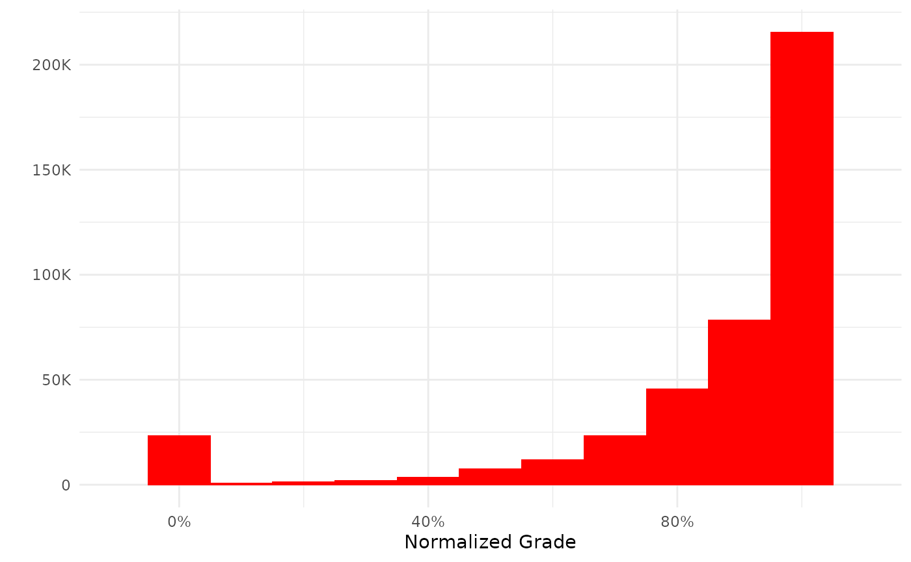

This vignette assumes that you have already been able to set up the connection to a Moodle Database and created a local cache (if chosen).
Learning analytics practitioners working with LMS data will often be interested in a sub-set of the available tables with relevant references added. These can be accessed through several mdl_* functions which will connect to the relevant table(s) and return a reference to the data. Currently the package supports curated access through the following functions:
For example:
my_grades <- mdl_grades()creates an R object named my_grades containing the dbplyr reference to the table in question.
The R generic summary function is implemented with sensible defaults so that:
summary(my_grades)
#> ----------
#> # of Grades: 1.4M
#> Missing: 945.2K
#> Courses: 2.8K
#> Users: 22.9K
#> Normalized Grades:
#> Median: 0.967
#> Mean: 0.859
#> SD: 0.336provides useful information for the learning analytics practitioner.
Generic plot functions are also provided for all data-access objects:
plot(my_grades)
The plot functions return a ggplot by default. If you prefer base graphics you can call the function thus:
plot(my_grades, use_base_graphics = TRUE)For convenience some additional columns have been added to the tables. These are all snake_case and are thus easy to spot:
The return value from the data-access functions are also dbplyr tables so dbplyr verbs and operation work on them as well. For example:
Since the return value of a plot function is a ggplot object it is of course possible to add and/or manipulate the plot using the syntax from the ggplot2 package. For example by annotating the plot:
my_plot <- mdl_grades() %>%
plot()
my_plot +
annotate("text",.45,10^5, label="Passing Grade",cex=5)+
annotate("segment",x=.6,y=10^5,xend=.6,yend=0, lty=2)